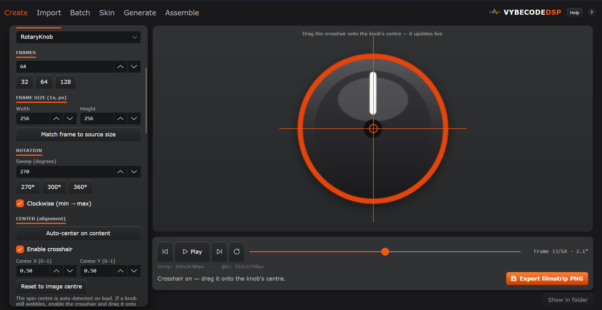

Your first filmstrip
in 5 minutes
Open StripKit, drop in your transparent PNG, choose a control type, and hit Export. This guide walks you through every step — and shows you how to load the result straight into JUCE.

The core workflow
Five steps from a blank canvas to a shippable, loader-ready sprite sheet.
Load your source art
Drag-and-drop a transparent PNG onto the preview area, or click Load source image… in the Create tab. StripKit accepts any PNG with an alpha channel — a knob face, fader cap, slider thumb, meter art, or a layered SVG / PSD.
On load, StripKit automatically detects the opaque-content centre and uses it as the rotation pivot. For most well-prepared art this just works with no manual adjustment.
Choose your control type
Pick one of the four types in the Type dropdown. The type determines how the per-frame transform is computed:
- Knob — rotary sweep, default 270° (-135° to +135°)
- Fader — vertical cap that travels a fixed pixel distance
- Slider — horizontal cap, same travel logic as Fader
- Meter — progressive fill; procedural or layered art
Set frame count & sweep
Frame count controls how smooth the animation looks and how large the output file is. 64 frames is the right default for most UIs.
- 32 frames — compact; looks good at small on-screen sizes
- 64 frames — standard; smooth at typical 64–128 px knob sizes
- 128 frames — premium; ideal for large or HiDPI knobs
For knobs, adjust the start/end angles if you need a range other than 270°. For faders and sliders, set the travel distance in pixels (how far the cap moves from minimum to maximum).
N−1, not
N. This is by design: frame 0 = min, frame N−1 = max.
Preview and align
The live preview updates whenever you change a setting. Drag the scrubber to step through frames, or press Play to watch a looping animation.
If the knob wobbles, the auto-detected centre may need adjusting. Use any of these tools in the Alignment panel:
- Auto-centre — recalculates from the opaque bounding box
- Crosshair guide — drag a visual overlay to pin the exact spin centre, then click Pin
- Centre X / Y — type a fractional value directly (0.5, 0.5 = image centre)
Export your filmstrip
Click Export filmstrip… and choose a save
location. StripKit writes a vertical PNG — frame 0 at the top,
frame N−1 at the bottom. Total height is
frameHeight × frameCount.
- @2x export — doubles the resolution for HiDPI displays; name ends in
@2x.png - skin.json manifest — a schema-valid JSON file that binds the strip to a parameter id and records its dimensions
- Loader code — pick JUCE, iPlug2, CSS/HTML, or HISE; StripKit writes a ready-to-paste file next to the PNG
.juce.h file alongside the
PNG — copy it into your project and you're done.
What each type needs
Each control type has its own art requirements and per-frame rendering logic.
Knob
A rotary control swept through a customisable arc.
- Transparent PNG of the full knob face
- Default sweep: 270° (−135° → +135°)
- 64 frames recommended
- Layered mode: static base + rotating pointer
Fader
A vertical cap that travels the length of a track.
- Transparent PNG of the cap only
- Set travel in pixels (min → max)
- Frames stack vertically by default
- Track background drawn separately in your plugin
Slider
A horizontal cap — same logic as Fader, rotated 90°.
- Transparent PNG of the cap only
- Set travel in pixels (min → max)
- Cap moves left to right
- Track background drawn separately in your plugin
Meter
A progressive fill — procedural or layered art.
- No art needed for procedural mode
- Layered mode: source = lit-segment overlay
- Four fill directions (up/down/left/right)
- Discrete or continuous fill
Load the strip in your plugin
A single LookAndFeel override is all you need.
StripKit can generate this file for you — enable
Export loader code → JUCE in the Export panel
before you click Export.
// MyKnobLookAndFeel.h — generated by StripKit (https://stripkit.pro) // Filmstrip: knob_strip.png — 64 frames, 128×128 px each, vertical stack. // Assign to your Slider: slider.setLookAndFeel(&lnf); // Use RotaryHorizontalVerticalDrag style. #pragma once #include <juce_gui_basics/juce_gui_basics.h> #include <cmath> class MyKnobLookAndFeel : public juce::LookAndFeel_V4 { public: MyKnobLookAndFeel() { // Embed via Projucer / CMake BinaryData (recommended). Alternatively: // filmStrip = juce::ImageFileFormat::loadFrom(juce::File("knob_strip.png")); filmStrip = juce::ImageCache::getFromMemory( BinaryData::knob_strip_png, BinaryData::knob_strip_pngSize); } void drawRotarySlider(juce::Graphics& g, int x, int y, int w, int h, float pos, float, float, juce::Slider&) override { const int frames = 64; const int frameW = 128; const int frameH = 128; const int frame = juce::jlimit(0, frames - 1, (int) std::lround(pos * (frames - 1))); g.drawImage(filmStrip, x, y, w, h, // destination rect 0, frame * frameH, frameW, frameH); // source frame } private: juce::Image filmStrip; };
knob_strip.juce.h alongside your PNG with the exact frame count,
frame dimensions, and stack direction already filled in. iPlug2, CSS/HTML, and
HISE targets are available in the same panel.